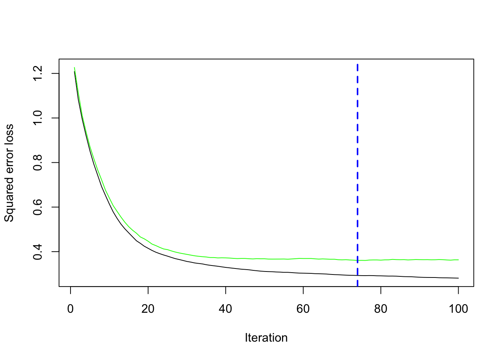

library(tidyverse)
library(data.table)
library(rpart)
library(rattle)
library(wooldridge)7 Boosted Regression Forest
7.1 Gradient Boosting
Packages to load for replication
Dataset for replication
#=== get data ===#
data(mlb1)
mlb1_dt <-
mlb1 %>%
data.table() %>% # turn into data.table
.[, salary := NULL] %>% # remove salary (use lsalary instead)
na.omit() # remove observations with NA in any of the variablesIn training RF that uses the idea of bagging, the original data is used to generate many bootstrapped datasets, a regression tree is trained on each of them independently , and then they are averaged when prediction. Boosting is similar to bagging (bootstrap aggregation) in that it trains many statistical models and then combine them. However, instead of training models independently, it trains models sequentially in a manner that improves prediction step by step.
While there are many variants of boosting methods (see Chapter 10 of Hastie et al. (2009)), we will look at gradient boosting using trees for regression in particular (Algorithm 10.3 in Hastie et al. (2009) presents the generic gradient tree boosting algorithm), where squared error is used as the loss function.
Let’s try to go through this algorithm a bit to have it sink in for you.
Step 1
Step 1 finds the mean of the dependent variable. This quantity is used as the starting estimate for the dependent variable.
(
f_0 <- mean(mlb1_dt$lsalary)
)[1] 13.51172Step 2
\(b = 1\)
Now, we get residuals:
mlb1_dt[, resid_1 := lsalary - f_0]The residuals contain information in lsalary that was left unexplained by simply using the mean of lsalary. By training a regression tree using the residuals as the dependent variable, we are finding a tree that can explain the unexplained parts of lsalary using the explanatory variables.
tree_fit_b1 <-
rpart(
resid_1 ~ ., # . means all variables
data = mlb1_dt
)Here is the fitted value of the residuals (\(\sum_{j=1}^J\gamma_{j, b}\cdot I(X_i \in R_{j,b})\))
resid_1_hat <- predict(tree_fit_b1, newdata = mlb1_dt)
head(resid_1_hat) 1 2 3 4 5 6
1.7134881 1.7134881 1.2414996 1.2414996 0.5054178 -0.1851016 Now, we update our prediction according to \(f_b(X_i) = f_{b-1}(X_i) + \lambda \cdot \sum_{j=1}^J\gamma_{j, b}\cdot I(X_i \in R_{j,b})\). We set \(\lambda\) to be \(0.2\) in this illustration.
lambda <- 0.2
f_1 <- f_0 + lambda * resid_1_hat
head(f_1) 1 2 3 4 5 6
13.85441 13.85441 13.76002 13.76002 13.61280 13.47470 Did we actually improve prediction accuracy? Let’s compare f_0 and f_1.
sum((mlb1_dt$lsalary - f_0)^2)[1] 445.0615sum((mlb1_dt$lsalary - f_1)^2)[1] 288.3205Great. Let’s move on to \(b = 2\).
#=== get negative of the residuals ===#
mlb1_dt[, resid_2 := lsalary - f_1]
#=== fit a regression tree ===#
tree_fit_b2 <-
rpart(
resid_2 ~ ., # . means all variables
data = mlb1_dt
)
#=== get predicted values ===#
resid_2_hat <- predict(tree_fit_b2, newdata = mlb1_dt)
#=== update ===#
f_2 <- f_1 + lambda * resid_2_hatsum((mlb1_dt$lsalary - f_1)^2)[1] 288.3205sum((mlb1_dt$lsalary - f_2)^2)[1] 186.9229We further improved our predictions. We repeat this process until certain user-specified stopping criteria is met.
As you probably have noticed, there are several key parameters in the process above that controls the performance of gradient boosting forest. \(\lambda\) controls the speed of learning. The lower \(\lambda\) is, slower the learning speed is. \(B\) (the number of trees) determines how many times we want to make small improvements to the original prediction. When you increase the value of \(\lambda\), you should decrease the value of \(B\). Too high values of \(\lambda\) and \(B\) can lead to over-fitting.
You may have been wondering why this algorithm is called Gradient boosting. Gradient boosting is much more general than the one described here particularly for gradient tree boosting for regression. It can be applied to both regression and classification1. In general, Step 2.a can be written as follows:
\[ r_{i,b} = - \huge[\normalsize\frac{\partial L(y_i, f(x_i))}{\partial f(x_i)}\huge]\normalsize_{f = f_{b-1}} \]
where \(L(y_i, f(x_i))\) is the loss function. For regression, the loss function is almost always squared error: \((y_i - f(x_i))^2\). For, \(L(y_i, f(x_i)) = (y_i - f(x_i))^2\), the negative of the derivative of the loss function with respect to \(f(x_i)\) is
\[ - \huge[\normalsize\frac{\partial L(y_i, f(x_i))}{\partial f(x_i)}\huge]\normalsize_{f = f_{b-1}} = - (- 2 (y_i - f(x_i))) = 2 (y_i - f(x_i)) \]
This is why we have \(r_{i,b} = (y_i - f_{b-1}(X_i))\) at Step 2.a. And, as you just saw, we are using the gradient of the loss function for model updating, which is why it is called gradient boosting. Note that it does not really matter whether you have \(2\) in front of the residuals or not the fitted residuals is multiplied (scaled) by \(\lambda\) to when updating the model. You can always find the same \(\lambda\) that would result in the same results as when just non-scaled residuals are used.
Most R and python packages allow you to use a fraction of the train sample that are randomly selected and/or to use a subset of the included variables in building a tree within Step 2. This generate randomness in the algorithm and they are referred to as stochastic gradient boosting.
7.2 Implementation
We can use the gbm package to train a gradient boosting regression. Just like ranger(), gbm takes formula and data like below.
library(gbm)
#=== fit a gbm model ===#
gbm_fit <-
gbm(
lsalary ~ hruns + years + rbisyr + allstar + runsyr + hits + bavg,
data = mlb1_dt
)Distribution not specified, assuming gaussian ...Here is the list of some parameters to be aware of:
n.trees: Number of trees (\(B\)). Default is \(100\).interaction.depth: 1 implies an additive model without interactions between included variables2, 2 implies a model with 2-way interactions. Default is 1.n.minobsinnode: Minimum number of observations in a terminal node (leaf).shrinkage: Learning rate (\(\lambda\)). Default is 0.1.bag.fraction: The fraction of the train data observations that are select randomly in building a tree. Default is 0.5.cv.folds: The number of folds in conducting KCV
By specifying cv.folds, gbm() automatically conducts cross-validation for you.
#=== gbm fit with CV ===#
gbm_fit <-
gbm(
lsalary ~ hruns + years + rbisyr + allstar + runsyr + hits + bavg, # . means all variables
data = mlb1_dt,
cv.folds = 5,
)Distribution not specified, assuming gaussian ...#=== see the MSE history ===#
gbm_fit$cv.error [1] 1.2254388 1.1096572 1.0188836 0.9451484 0.8764874 0.8154053 0.7681966
[8] 0.7227889 0.6831316 0.6492878 0.6202762 0.5942215 0.5693241 0.5485684
[15] 0.5278321 0.5131015 0.4985837 0.4880802 0.4767910 0.4656425 0.4571257
[22] 0.4502539 0.4448326 0.4411768 0.4368799 0.4285447 0.4250382 0.4184043
[29] 0.4146997 0.4104091 0.4078917 0.4036995 0.4012386 0.3984762 0.3968246
[36] 0.3954408 0.3936881 0.3922179 0.3898391 0.3877176 0.3873386 0.3871197
[43] 0.3873842 0.3861886 0.3850445 0.3845866 0.3848790 0.3838000 0.3833878
[50] 0.3825944 0.3808730 0.3806207 0.3792785 0.3791392 0.3784091 0.3779299
[57] 0.3749792 0.3753697 0.3748035 0.3749157 0.3728077 0.3721398 0.3735805
[64] 0.3730954 0.3716606 0.3712136 0.3698348 0.3701441 0.3688050 0.3696563
[71] 0.3695531 0.3678965 0.3692444 0.3697791 0.3704924 0.3694109 0.3688957
[78] 0.3671964 0.3673546 0.3681492 0.3679176 0.3677911 0.3675692 0.3677197
[85] 0.3676185 0.3677390 0.3673854 0.3660198 0.3673235 0.3675350 0.3685687
[92] 0.3678714 0.3666266 0.3676465 0.3671833 0.3661709 0.3652917 0.3647139
[99] 0.3644427 0.3651259You can visualize the CV results using gbm.perf().
gbm.perf(gbm_fit)
[1] 99Note that it will tell you what the optimal number of trees is given the values of the other hyper-parameters (here default values). If you want to tune other parameters as well, you need to program it yourself.
7.3 Resources
- Gradient Boosting with Scikit-Learn, XGBoost, LightGBM, and CatBoost by Jason Brownlee
Hastie, Trevor, Robert Tibshirani, Jerome H Friedman, and Jerome H Friedman. 2009. The Elements of Statistical Learning: Data Mining, Inference, and Prediction. Vol. 2. Springer.